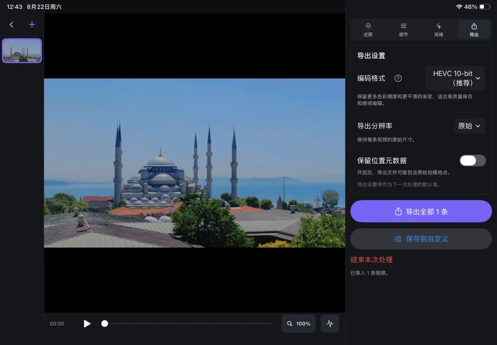

在 iPhone 上还原 Luna Ultra 的 I-Log 视频
准备一段在相机中以 I-Log 模式录制的原始视频。下面以 Luna Ultra 的非 RAW、10-bit HEVC 素材为例。
选择相机原片
将存储卡接入 iPhone，或先将视频保存到系统「照片」。在 HUEO 首页点「从文件导入」或「从照片导入」，选择这一批素材。
需要先把整张卡里的照片和视频归档时，首页还有独立的「导入到照片」工具。
核对 I-Log 输入
打开编辑器的「还原」面板。如果用 I-Log 拍摄的素材需要手动选择，请选 I-Log / Rec.2020。使用 1.1.8 或更高版本时，可以直接搜索 Luna Ultra 或 I-Log。
普通色彩模式拍摄的视频已经有对比度，保留其正确输入解释，以免重复套用 Log 转换。

iPhone · Log 还原 对照原片，调整这一批
停在同一帧，使用原片对比检查天空、肤色或阴影。需要时调整曝光和白平衡，再将可共享的调整应用到其他素材。
每条素材仍使用各自的技术还原方案。先预览几段光照不同的片段，再导出整批。
导回系统「照片」
在「导出」中选择原始分辨率等输出设置，以「照片」为目的地。保存后，在系统「照片」里查看作品的拍摄日期。
保留日期需要原片中存在可用的拍摄时间。选择按拍摄日期排序时，就能在相应的拍摄日找到作品。

iPad · 导出设置

无声演示，画面来自已上架的 App Store 截图。
阅读演示文字
先查看 iPad 还原页与导出页的同一帧画面，再看 iPhone 上的 I-Log 输入方案、Mac 上的色轮，以及 iPad 导出页中保留已有拍摄信息的选项。
用自己的一段 I-Log 原片试一次
免费额度按成功导出的文件计数，可先预览并核对还原效果。